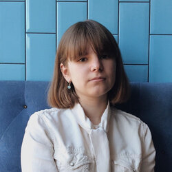

|  | Anna Irinaanka.irina@yandex.ru | LinkedIn | Instagram I am a student at University of Surrey, currently completing a master's degree at Digital Marketing and Channel Management. My background in Accounting and Finance allowed me to gain great analitical skills while my work as a digital and social media coordinator in SUBCULTURED magazine and Surrey Food and Wine Society improved my digital skills as well as ability to work in a team and adapt to fast-paced environment. |
| Dates | Works |
|---|---|
| 2019-2020 | Digital Media Coordinator at Surrey Food & Wine Society, England |
| 2018-2019 | Street Style Director and Social Media Manager at SUBCULTURED magazine, England |
| July 2018 | Accoutant Assistant at Institute of Physics of Microstructures of Russian Academy of Sciences, Russia |
| Robert Kreuzbauer
Personal Tutor (University of Surrey) robert.kreuzbauer@gmail.com r.kreuzbauer@surrey.ac.uk |
Emma Morris
English Tutor (University of Surrey) e.morris@studygroup.com |